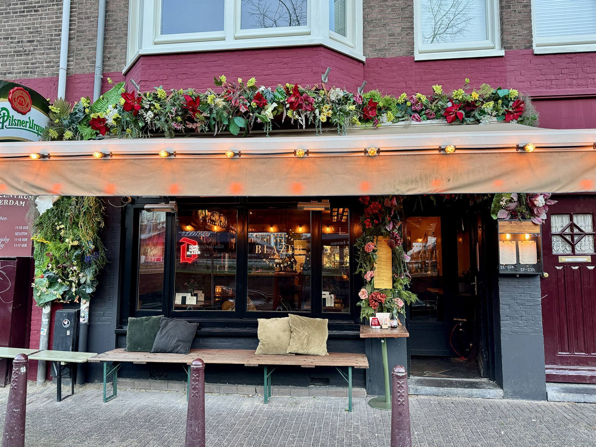
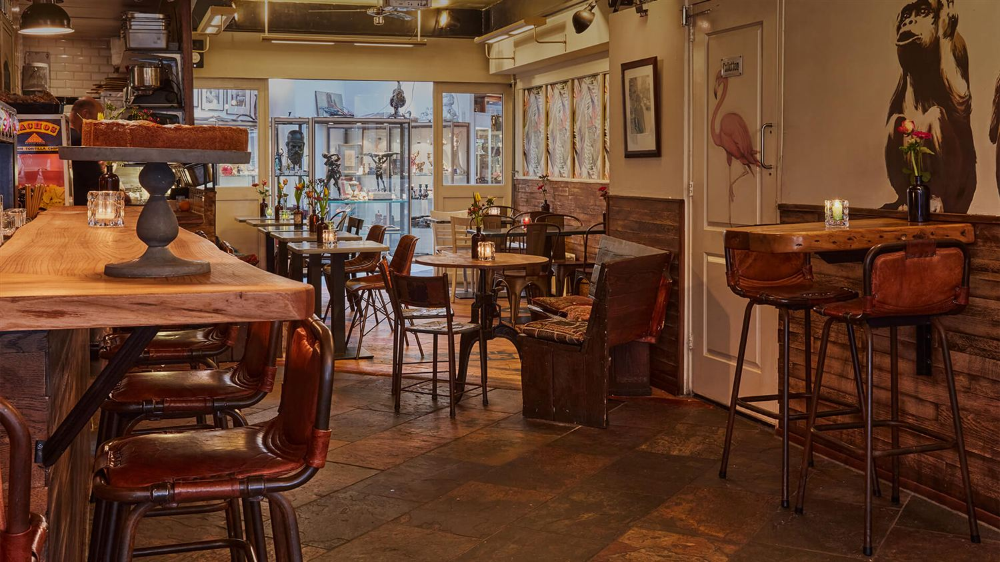
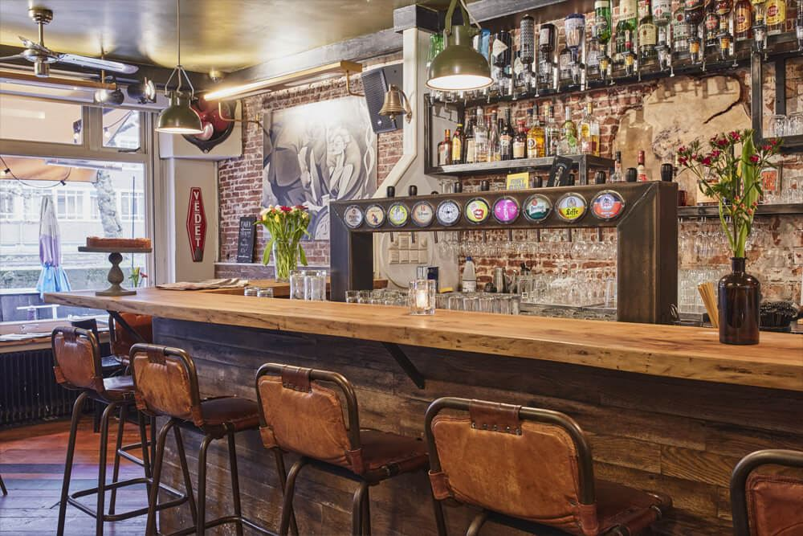
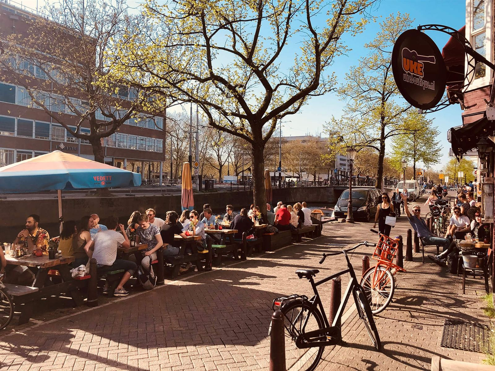
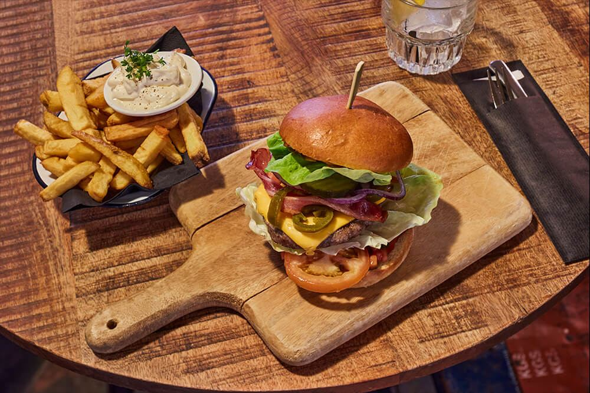
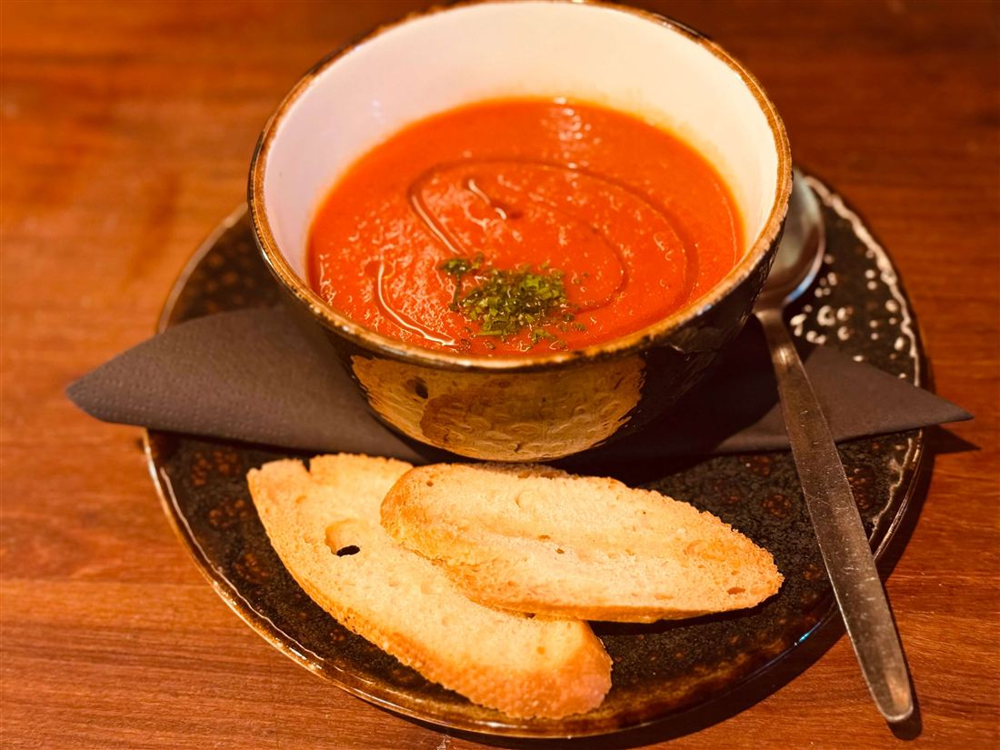
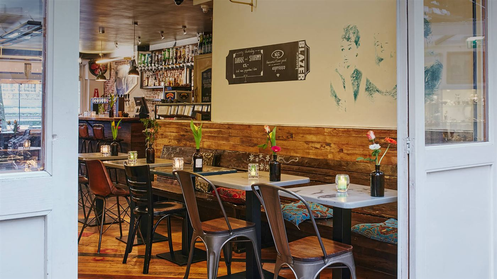
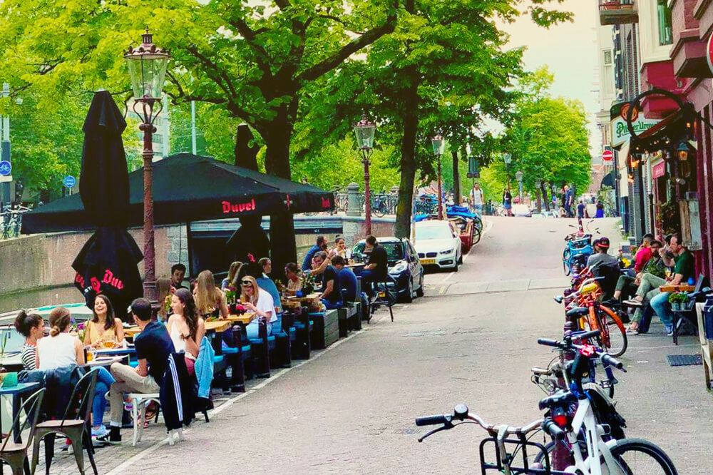

Brasserie
Blazer
Het kloppende hart van de Jordaan sinds 2008. Voor een lunch, een borrel, een diner of gewoon een goede kop koffie.
Welkom bij Brasserie Blazer
Bij ons draait alles om de Amsterdamse gezelligheid die de Jordaan zo bijzonder maakt.
Of je nu komt voor een smakelijke lunch, een gezellige borrel, een heerlijk diner of gewoon een goede kop koffie: bij ons zit je altijd goed. De brasserie is opgericht door de gebroeders Blazer, die er alles aan doen om ervoor te zorgen dat elke bezoeker zich welkom voelt.
Met een ontspannen sfeer, lekker eten en een plek midden in het bruisende hart van de Jordaan is Blazer de ideale plek om even bij te tanken of je dag af te sluiten. Er is altijd iets te beleven: volg ons op Facebook en Instagram (@brasserieblazer) voor nieuwe gerechten en speciale events.
Ben je in de buurt van de Haarlemmerstraat? Leg dan vooral even aan bij Café Blazer op nr. 73.



Ons terras
Op ons ruime, zonnige terras kun je in de zomer heerlijk ontspannen. Zin in een verfrissend drankje, een lekker hapje of gewoon even de zon? Kom gezellig langs, plof neer en laat je verwennen.
Het terras is vrij toegankelijk: je schuift aan zonder reservering. Liever binnen dineren? Een tafel binnen kun je wel reserveren.

Lunchen in de Jordaan
Kies een van onze specialiteiten, zoals de smaakvolle Blazer-burger, of liever een klassieker als een kroket op brood: hier vind je altijd iets naar wens.
Maak er een compleet uitje van met een bezoek aan het naastgelegen Antiekcentrum Amsterdam, de grootste overdekte antiekhandel van Nederland, of een wandeling door de Negen Straatjes en de Jordaan.
- Lunch reserveren kan niet. Loop gewoon binnen.
- Met de auto? Bij Europarking, aan de overkant van de straat, parkeer je makkelijk.
Onze menukaart
Dag in, dag uit welkom, binnen en op het terras. Van een lichte lunch tot een uitgebreid diner: voor ieder wat wils.
Tosti's & broodjes
Burgers
Salades, soep & quiche
Frites
Zoet
Koffie, thee en frisdrank staan onder . Originele kaart: lunchmenu (pdf).
Voorgerechten
Nagerechten
Hoofdgerechten
Theatermenu 31,50
- Paprika-tomatensoep met crostini's
- Blazer-, vega- of vis-burger met cheddar en frites
- Appeltaart met slagroom van onze banketbakker
- Koffie of thee
Wijnen glas / fles
Aperitieven
Originele kaart: dinermenu (pdf).
Van de tap glas / pint
Brouwerij 't IJ fles
De Eeuwige Jeugd fles
Laag in alcohol
IPA's, fruitbier, cider & meer fles
Originele kaart: bierkaart (pdf).
Cocktails & meer
Spritz, mule & co
Uit de frituur
Mix it up
Borrelhapjes
Originele kaart: cocktails & snacks (pdf).
Koffie
Warm
Frisdrank & sapjes
Allergenen-informatie is beschikbaar bij de bediening.



Reserveren
Een tafel binnen voor het diner reserveer je online of telefonisch. Voor de lunch en op het terras is geen reservering nodig: kom gewoon langs.
Hier komt jullie eigen reserveringsmodule (GuestPlan), precies zoals nu op de site.
Bel 020-620 9690Openingstijden
| Zondag t/m woensdag | 11:00 – 00:00 |
|---|---|
| Donderdag | 11:00 – 01:00 |
| Vrijdag en zaterdag | 11:00 – 02:00 |
90 reizigers op Tripadvisor waarderen Brasserie Blazer als “uitstekend”.
Brasserie en Café Blazer zoeken personeel
Lijkt het je leuk om in een biercafé te werken, in een team met gezellige mensen en veel mogelijkheden om nieuwe dingen te leren? Stuur je cv naar solliciteren@brasserieblazer.nl, dan nemen we contact met je op.
Hier kun je ons vinden
Lijnbaansgracht 1901016 XA Amsterdam
Tijdens openingstijden bereik je ons op 020-620 9690, of mail naar info@brasserieblazer.nl.
Volg ons voor nieuws en evenementen op Facebook en Instagram: @brasserieblazer.
Plan je route